Construction paper is honestly one of the best things you can keep stocked at home during the holidays. It is affordable, easy to cut, and comes in all the colors you need for Christmas. These 20 crafts for Christmas with construction paper cover everything from tiny toddler projects to ideas that will genuinely impress older kids. Grab a stack of red, green, and white paper, and let's make something wonderful together. 🎄
What You'll Need
Most of these ideas use the same core supplies, so one quick round-up and you are set for the whole list.
- Construction paper in holiday colors, a variety pack with red, green, and white covers almost every idea here.
- Elmer's glue sticks, the disappearing purple ones are great so kids can see where they're gluing.
- Child-safe scissors, blunt-tip and easy for small hands to squeeze.
- Self-adhesive googly eyes, peel-and-stick makes them so much easier for little ones.
- Gold and silver metallic markers, perfect for adding shiny details to stars, ornaments, and more.
- Crayons or washable markers, for coloring and adding personal touches.
- Tape or a stapler, handy for wearable projects and garlands.
20 Christmas Construction Paper Craft Ideas
1. Layered Paper Christmas Tree
Cut three green triangles in graduated sizes and stack them with the largest on the bottom. Add a small brown rectangle trunk, then let your child go wild decorating with tiny marker dots for ornaments and a yellow paper star on top. This classic construction paper Christmas craft works brilliantly for all ages, and even the youngest toddler can handle the decorating step once you pre-cut the shapes.
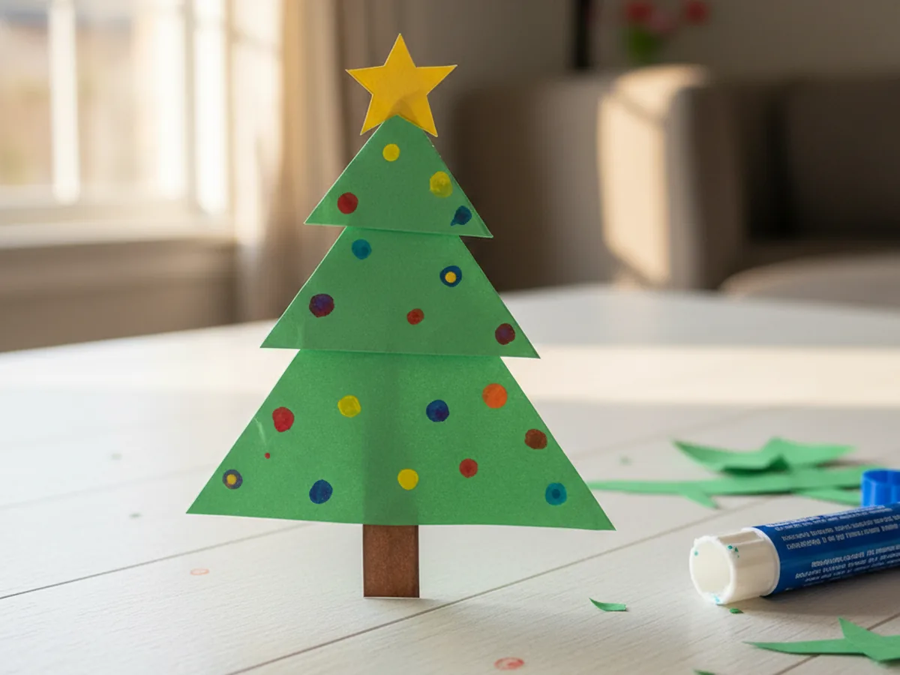
2. Paper Santa Face
Start with a large flesh-toned or peach circle for Santa's face. Cut a wide white beard from cotton-ball-shaped white paper and a red triangle hat. Add googly eyes, a red dot nose, and a rosy marker smile. Kids love giving Santa different expressions, and it makes a sweet December display on the fridge or a window.
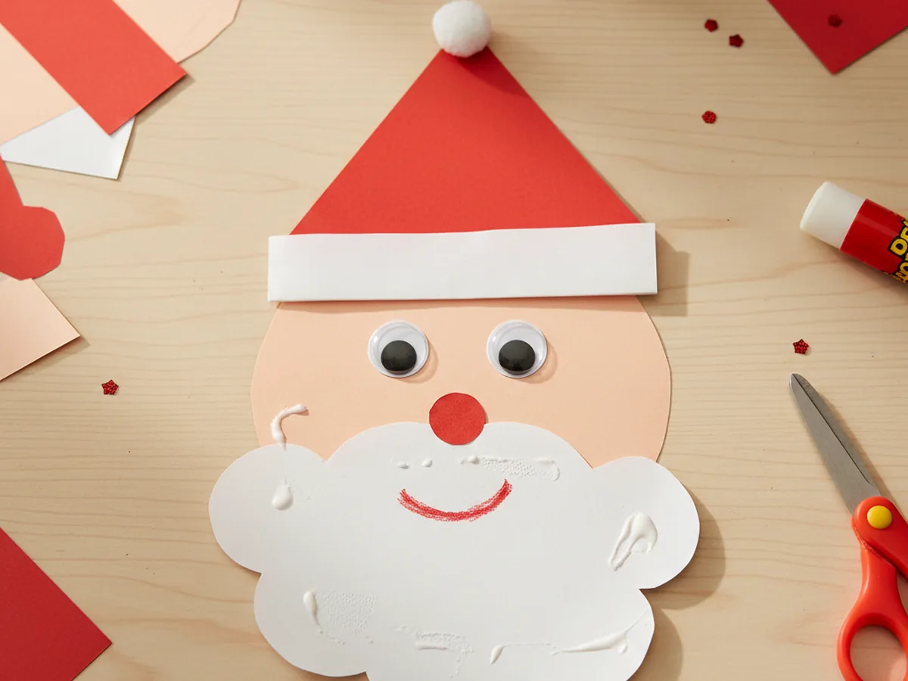
3. Paper Reindeer Antlers Headband
Cut two antler shapes from brown construction paper and attach them to a strip of brown paper stapled into a head-sized circle. Add two small googly eyes on a cardboard strip if you like, or just wear the headband and strike a pose. This is the kind of Christmas craft with construction paper that turns straight into a holiday photo opportunity.
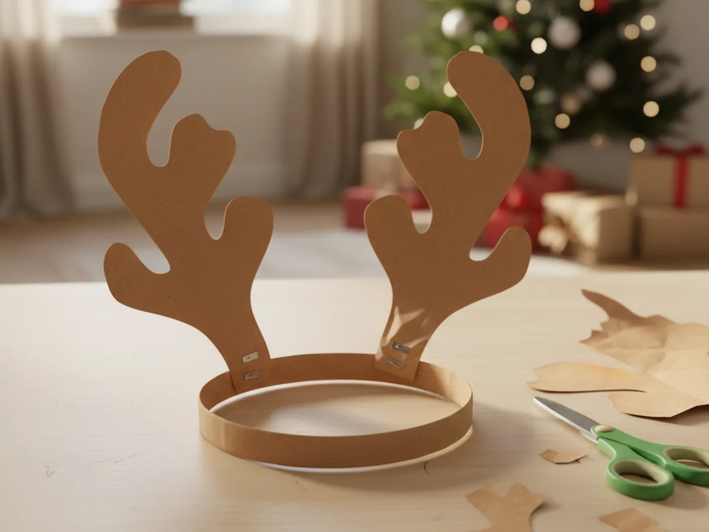
4. Twisted Candy Cane
Cut long strips of red and white construction paper, then twist or braid them together and bend the top into a cane shape. Secure the ends with a small piece of tape. The result looks surprisingly polished for something that only takes a handful of strips and a few minutes. Hang a few together in a window for a simple holiday display.
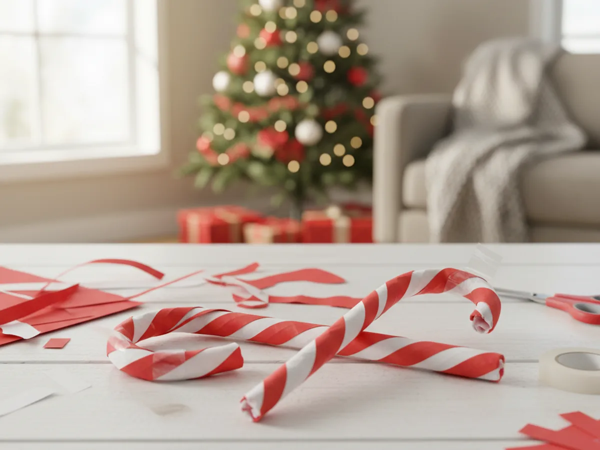
5. Paper Christmas Stocking
Draw or trace a large stocking shape onto red construction paper and cut two identical pieces. Staple or glue them together around the edges, leaving the top open, and add a white cuff from folded white paper. Kids can decorate the outside with marker snowflakes, their name, or sticker dots. It makes a darling decoration that holds a candy or small note inside.
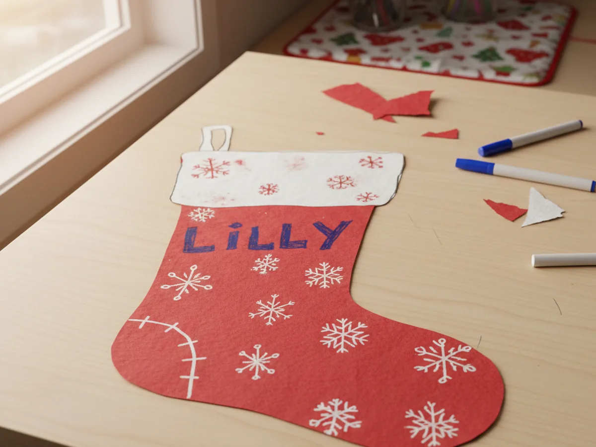
6. Five-Point Paper Star
Cut a large star from yellow or gold construction paper and trace along the edges with a gold metallic marker for extra sparkle. Punch a small hole at the top and thread a piece of ribbon or yarn through it to hang. This is one of those crafts for Christmas with construction paper that children feel genuinely proud of when it goes up on the tree or above a doorway.
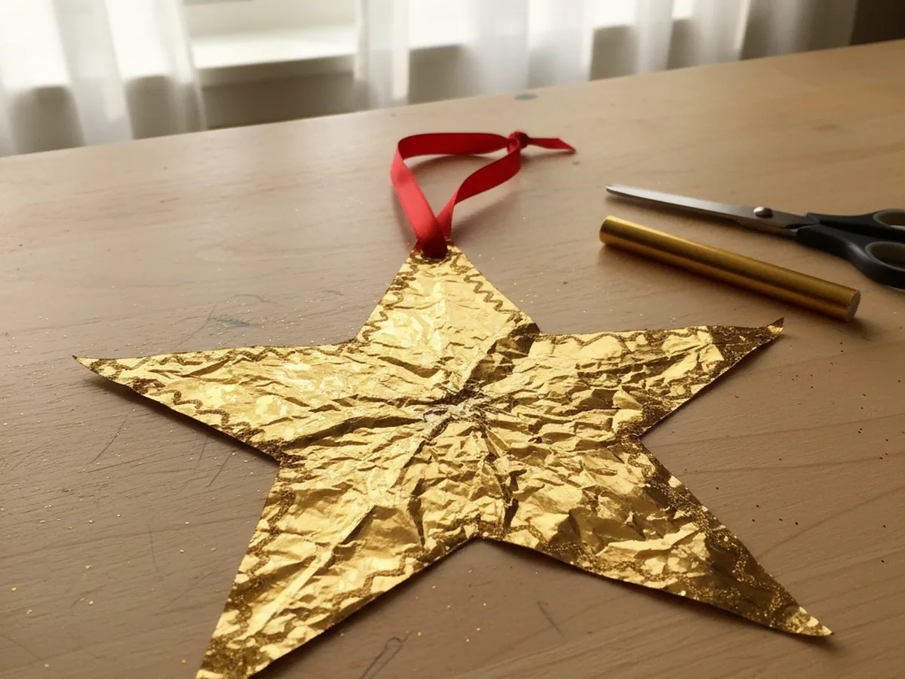
7. Stacked Paper Snowman
Cut three white circles in large, medium, and small sizes and glue them in a stack on blue or black construction paper background. Use a small orange triangle for the nose, tiny black paper circles for the eyes and buttons, and a thin strip of colorful paper for the scarf. Simple, sweet, and something even a two-year-old can help assemble with a little guidance.
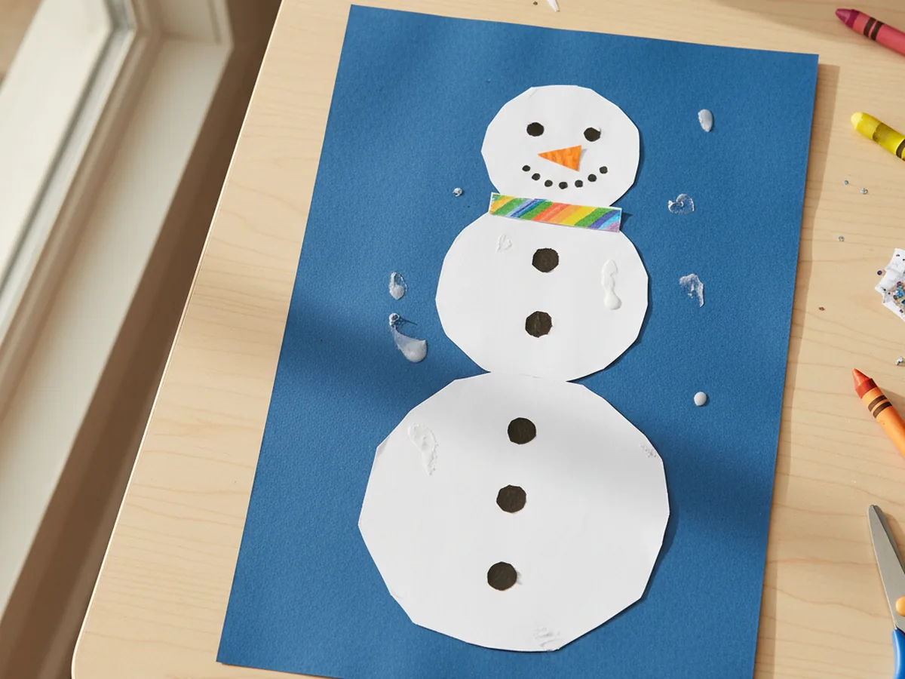
8. Paper Elf Body Puppet
Roll a cone from green construction paper for the elf's body and a smaller cone for the hat. Attach a round paper head with drawn-on features, add tiny paper hands and pointy shoes, and glue the whole figure to a craft stick. Kids absolutely love making these little characters and putting on a holiday puppet show for the family. 🎭
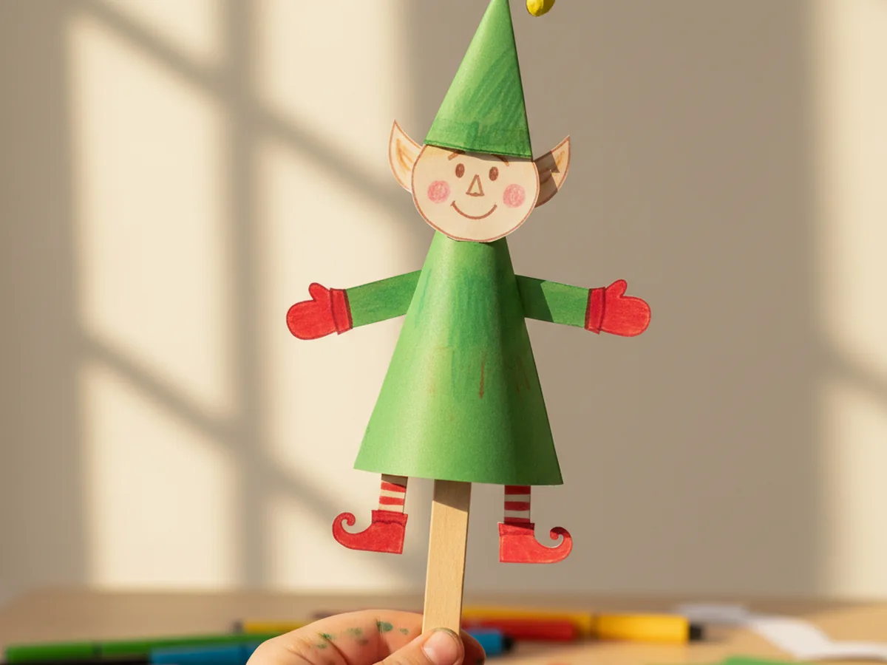
9. Paper Gingerbread Man
Cut a gingerbread man shape from brown construction paper, then decorate with white marker "icing" lines, small paper button circles, and a curvy smile. Older kids can cut their own shape, while younger ones love the decorating part. Hang several of them in a row for a cheerful garland that smells like imagination if not quite like cookies.
10. Paper Christmas Bell
Cut a large bell shape from yellow or gold construction paper. Add a small paper clapper hanging from a length of yarn at the bottom, and decorate the top with a red or green paper bow. Glue a pair of bells side by side to make a classic jingle bell pair. These look lovely taped to a window or a cabinet door during December.
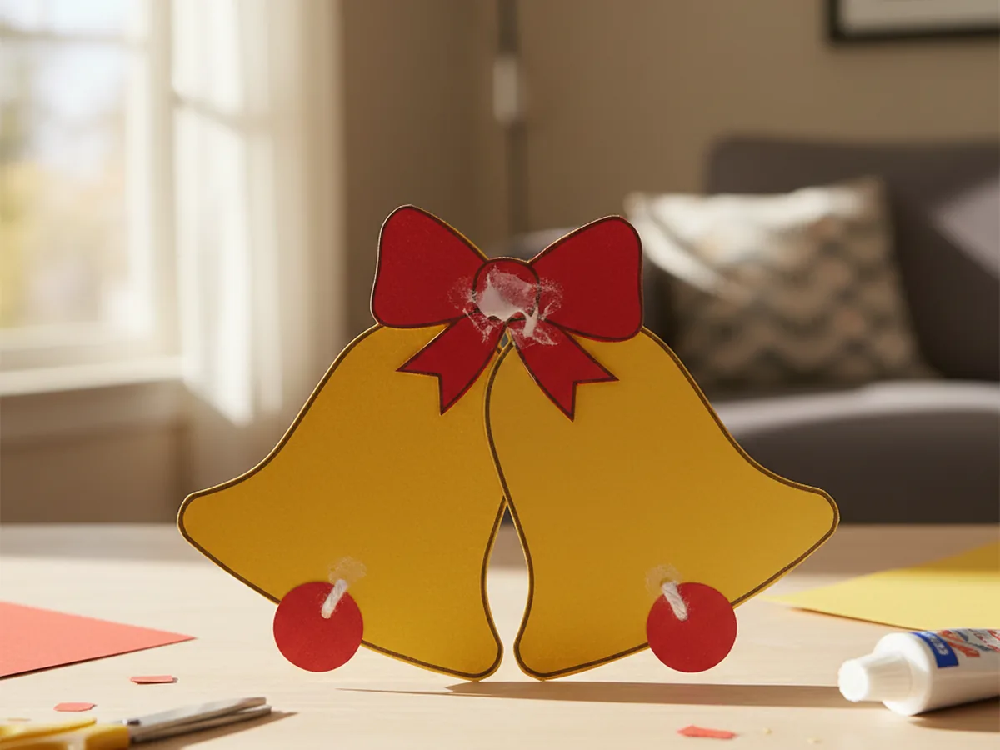
11. Paper Angel Decoration
Roll a white cone for the angel's body and attach a round paper face at the top. Cut wide wing shapes from white or gold paper and glue them to the back of the cone. A small halo made from a looped gold strip completes the look. This Christmas construction paper craft is especially sweet when a child makes it as a gift for a grandparent.
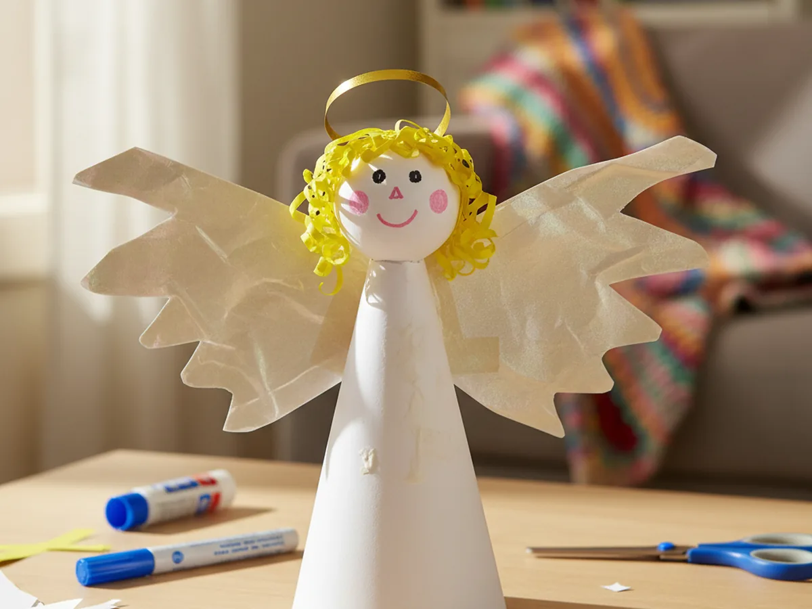
12. Paper Penguin in a Scarf
Cut a large black oval for the body, a white oval for the belly, and a small orange diamond for the beak. Add googly eyes and a thin strip of brightly colored paper wrapped around the neck as a scarf. Penguins are always a hit with kids, and the colorful scarf detail makes this feel festive and fun even though it comes together in under 20 minutes.
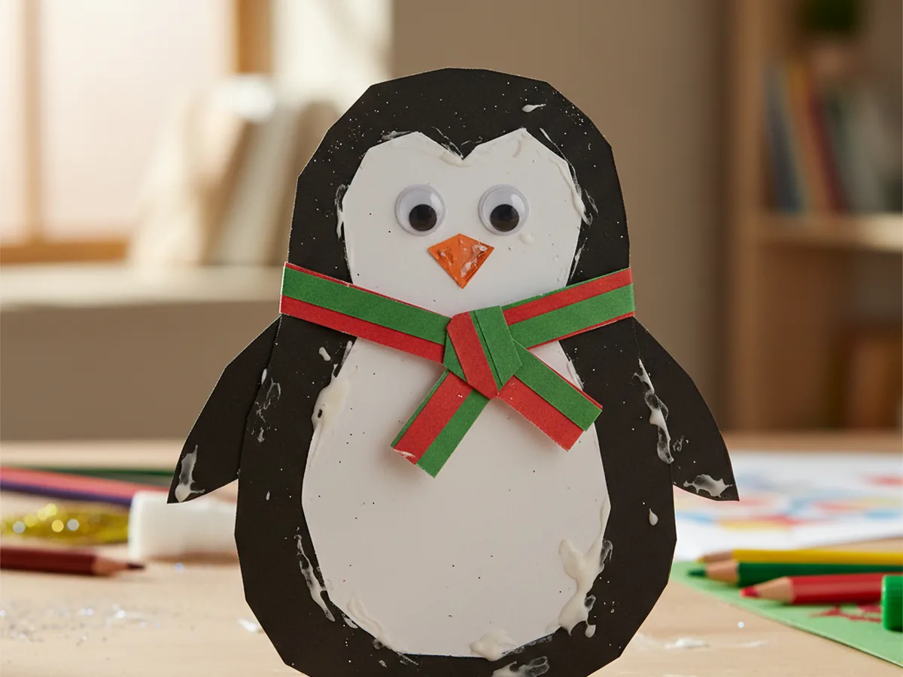
13. Torn-Paper Christmas Wreath
Tear green construction paper into rough little pieces and glue them all over a large paper ring until it is completely covered. Add small red paper circles as berries, and tie a ribbon bow at the top. Tearing paper is actually a wonderful fine motor activity for toddlers, so this is a perfect craft for the littlest helpers in the family.
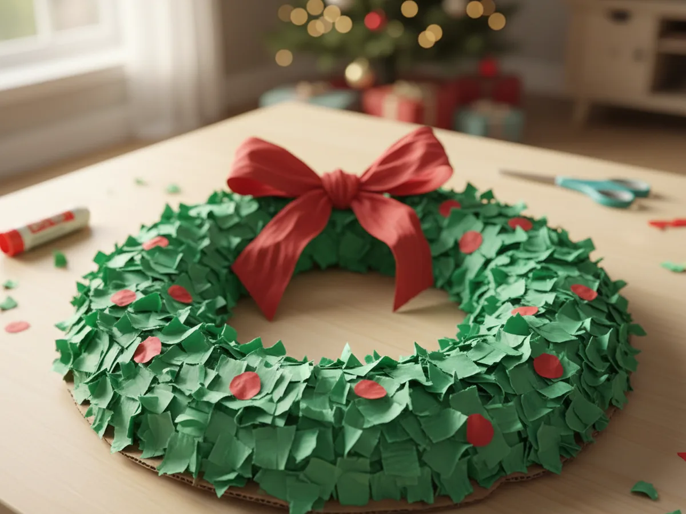
14. Paper Holiday Gift Tags
Cut small rectangles or tag shapes from colorful construction paper and punch a hole at one end. Let kids decorate each tag with markers, stickers, or metallic pen doodles before threading yarn through the hole. Making personalized tags together is a sweet way to get children involved in wrapping gifts, and it gives every present a handmade touch that store-bought tags simply can't match.
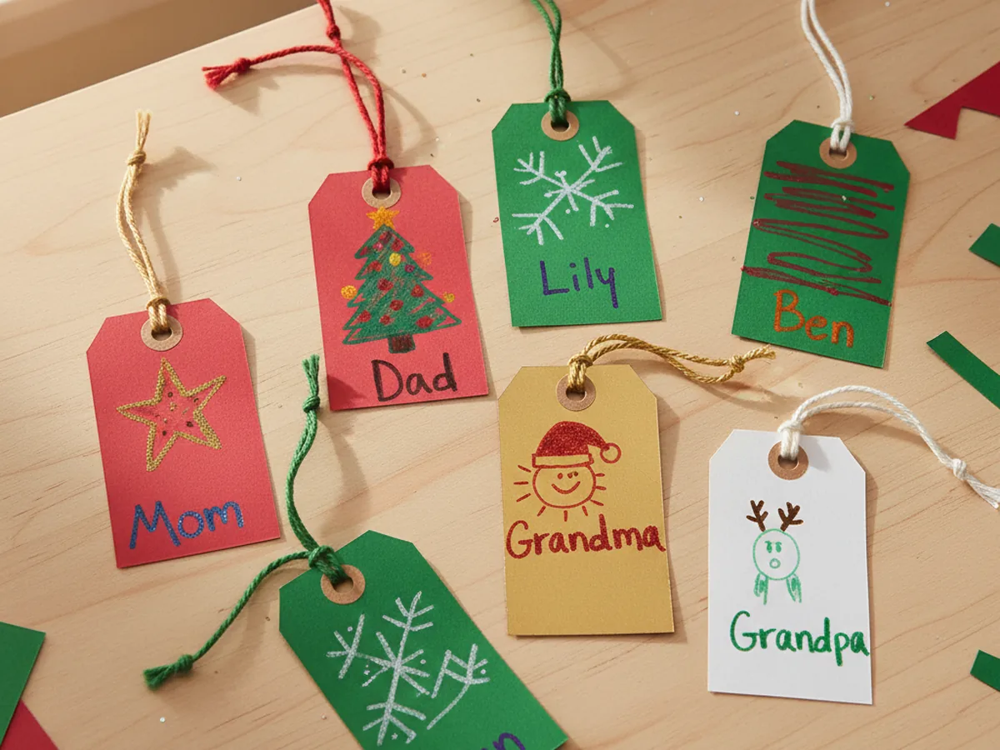
15. Paper Poinsettia
Cut six to eight large petal shapes from red construction paper and arrange them in a circle, overlapping slightly, glued onto a green background. Add small yellow circles in the center to finish the flower. Poinsettias look impressive but are surprisingly easy to make, and this version works especially well as a card decoration or a simple wall display.
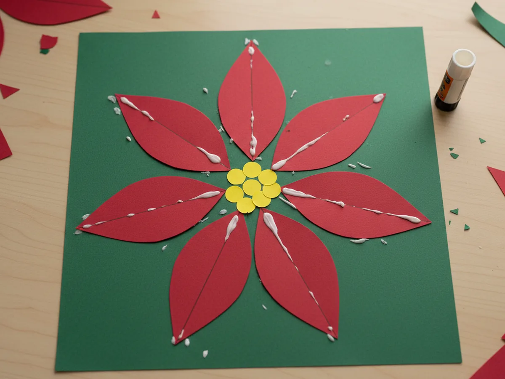
16. Folded Christmas Card
Fold a piece of construction paper in half to create a simple card shape, then let your child decorate the front however they like, whether it is a tree, a snowman, or just festive scribbles. Write a message inside together. Grandparents treasure these homemade construction paper Christmas crafts far more than any card from a shop, and the whole thing takes only a few minutes to make.
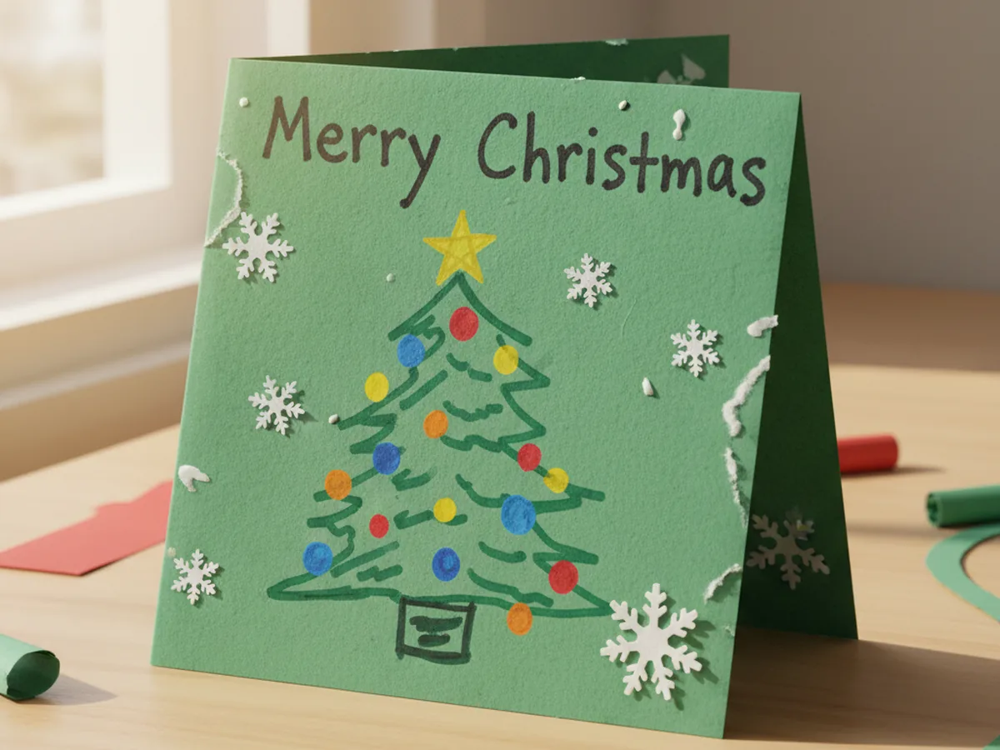
17. Christmas Lights Garland
Cut small oval or teardrop shapes from red, blue, green, and yellow construction paper for the bulbs, then glue each one onto a long zigzag strip of black paper connecting them with short rectangles like a real string of lights. This Christmas paper garland looks beautiful draped along a mantel or hung across a bedroom wall. It is a great project for siblings to tackle together, each making their own section.
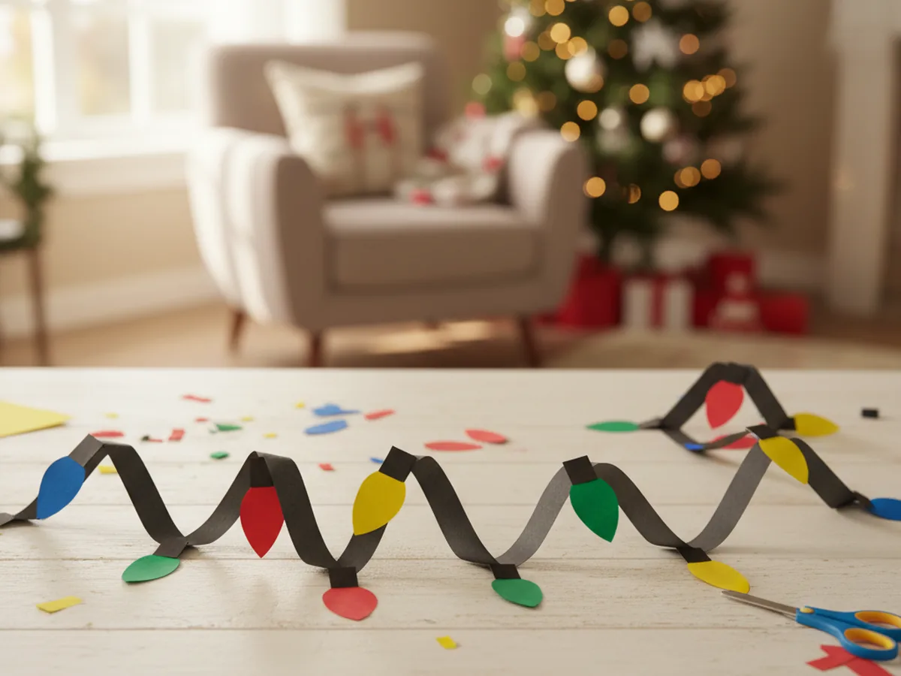
18. Paper Santa Hat You Can Wear
Roll a large piece of red construction paper into a cone that fits over your child's head and tape it securely. Add a band of white paper around the base and a small white pom-pom or crumpled paper ball at the tip. Kids love wearing their creations, and this wearable hat makes a fantastic addition to any family Christmas photo. 📸
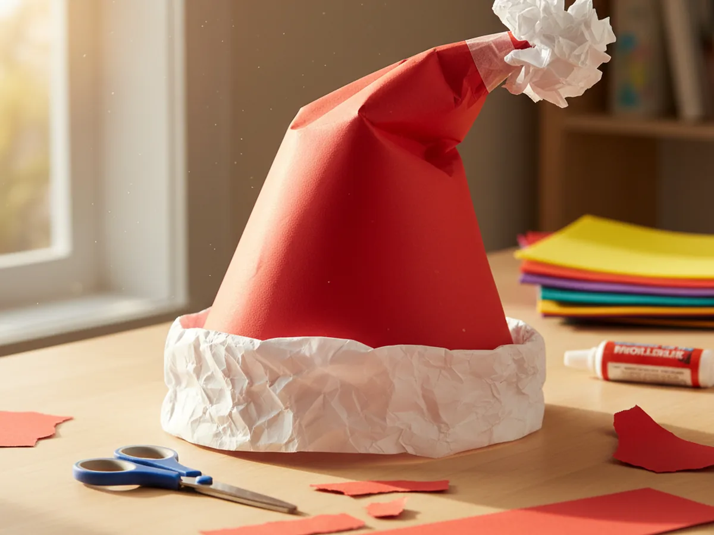
19. Paper Nutcracker
Build a flat nutcracker figure from stacked construction paper rectangles in red, blue, black, and gold. Add a round paper face with a wide drawn-on grin, a tall paper hat, and fringed epaulets cut from yellow paper. This is one of the more detailed crafts for Christmas with construction paper on the list, making it ideal for kids who like a bit more of a challenge and are ready to plan their own design.
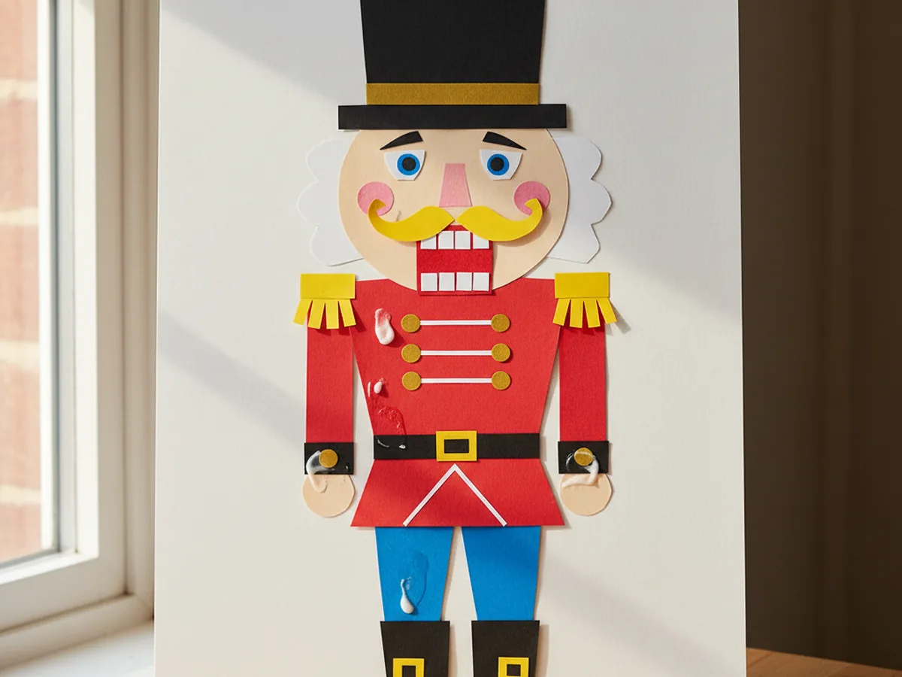
20. 3D Paper Snowflake Mobile
Cut six identical strips of white construction paper and fold each into a square that opens into a diamond shape. Connect all six with glue or staples to create a three-dimensional snowflake, then hang several from a piece of yarn across a window frame. The way they catch the light and spin gently makes this one of the most magical-looking construction paper Christmas decorations you can make at home.
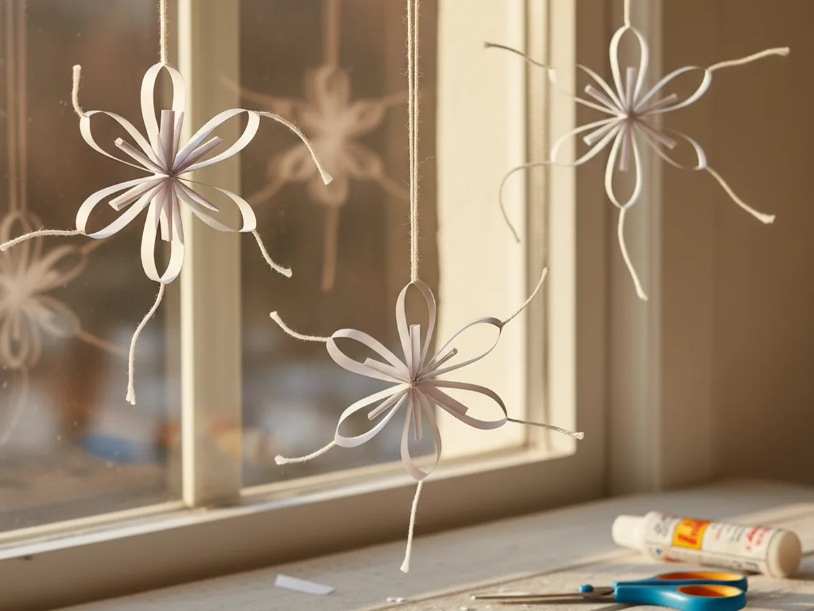
Final Thoughts
A stack of construction paper and a little free time is really all you need to fill December with sweet handmade moments. These 20 crafts for Christmas with construction paper are designed to be stress-free and genuinely enjoyable, so you can focus on the fun rather than the instructions. Pick whichever ones catch your child's eye, set out the supplies, and let the creative magic happen. The finished pieces will end up on your fridge and in your heart for years to come. 🎁
More Crafts You'll Love
If you enjoyed making these, here are a couple more Christmas paper craft ideas to keep the holiday creativity going.
- 25 Adorable Christmas Paper Crafts Kids Will Beg to Make Every Year
- How to Make a Paper Christmas Tree (Step-by-Step Tutorial)
There is no wrong way to craft with your kids. Every snip and glue smear is part of the memory.